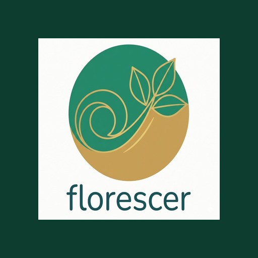

Cuide da sua mente,
um dia de cada vez.
Comece pelo tom. Depois, se quiser, dê nome. Nenhuma emoção é certa ou errada.
Os dois são opcionais. Toque de novo para desmarcar.
Tudo aqui é opcional.
Não é fraqueza nem exagero. Coloque a mão no peito e sinta a respiração. Você está aqui, agora — e isso basta para começar.
Água fria. Molhar o rosto ou segurar gelo por 30 segundos ativa um reflexo natural que desacelera o coração.